El número 0.34 es un número...
1
Decimal exacto
2
Decimal periódico puro
3
Decimal periódico mixto
4
Decimal no exacto y no periódico
9 Pasa las siguientes fracciones a número decimal e indica a que tipo pertenecen:
-
a
\[ \frac{1}{9} \]
-
b
\[ \frac{1}{2} \]
-
c
\[ \frac{3}{11} \]
10 Pasa los siguientes números decimales exactos a fracción:
-
a
\[ 0.38 \]
-
b
\[ 0.562 \]
-
c
\[ 0.22 \]
Paso de decimales periódicos a fracción

11 Pasa los siguientes números decimales periódicos a fracción:
-
a
\[ 0.333333\dots \]
-
b
\[ 11.565656\dots \]
-
c
\[ 2.2333333\dots \]
-
d
\[ 1.21333333\dots \]
-
e
\[ 1.2132323232\dots \]
11 Pasa los siguientes números decimales periódicos a fracción: (cont.)
-
f
\[ 0.321123123123123\dots \]
-
g
\[ 2.12345454545\dots \]
-
h
\[ 5.11233333333\dots \]
-
i
\[ 4.1234234234\dots \]
12 ¿Cuántas botellas de 2 L se pueden llenar con 30L? Y si las botellas son de \[\frac{2}{3}\]?
13 Con el contenido de un bidón de agua se han llenado 40 botellas de \[ \frac{3}{4} \]de litro. ¿Cuántos litros de agua había en el bidón?
14 Una fábrica de zumo produce al día 2100 botellines de \[ \frac{1}{3} \] de L y 2000 botellas de 1L. ¿Cuál es la produción diaria de zumo en litros?
15En un equipo de baloncesto juegan Ángela, Raquel, Lourdes y Elena. Ángela ha marcado \[ \frac{1}{5} \] de los puntos, Raquel, \[ \frac{3}{10} \], Eva, \[ \frac{2}{15} \] y Lourdes, \[ \frac{1}{3} \]. ¿Qué fracción de puntos ha anotado Elena?
16
La batería de mi móvil se ha gastado despues de 5 llamadas. En la primera se consumieron \[ \frac{2}{9} \] de la carga, en la segunda, \[ \frac{1}{6} \], y en cada una de las tres restantes \[ \frac{5}{48} \]. ¿Qué fracción de la carga se consumió en los periodos qen que no estaba llamando?
17Una finca mide 30m² y queremos plantar en ella robles. Si cada roble ocupa \[ \frac{1}{5} \]m², cuántos robles podemos plantar como máximo?
18 Dos atletas llevan recorrido los \[ \frac{3}{12} \] y los \[ \frac{8}{32} \] de una carrera, respectivamente. ¿Cuál de losdos va delante?
19 Tres jinetes disputan una carrera invirtiendo para ello \[ \frac{7}{5} \] de hora, \[ \frac{20}{12} \] hora y \[ \frac{16}{9} \] horas,respectivametne. ¿Cuál de ellos es más veloz?
20 ¿Cuántas comensales podemos colocar en una emsa de 5m sabiendo que en las cabeceras solo se sienta una persona y en los laterales, cada persona ocupa \[ \frac{3}{5} \] de metro?
21 Hay 30 personas un aula de las cuales \[ \frac{8}{15} \] juegan a baloncesto. ¿Cuantas personas juegan a baloncesto?
22 En un huerto plantamos 600 semillas de lechuga. Solo nacen \[ \frac{3}{4} \] de las lechugas plantadas. ¿Cuantas lechugas nacen? ¿Cuantas semillas no germinan?
23Juán ha marcado \[ \frac{9}{30} \] de los goles de su equipo mientras Pedro ha marcado \[ \frac{3}{15} \]. ¿Quién de los dos ha marcado más goles?